Výsledky vyhledávání
12 odpovídajících látek bylo nalezeno.
Pro každou odpovídající látku bude zobrazeno následující:
- Název látky
- Vzorec látky
- Obrázek struktury (je-li dostupný)
Klikněte na název pro zobrazení dalších dat.
- Benzidine (C12H12N2)
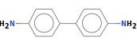 - [1,1'-Biphenyl]-4,4'-diamine, 3,3'-dichloro- (C12H10Cl2N2)
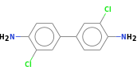 - [1,1'-Biphenyl]-4,4'-diamine, 3,3'-dimethyl- (C14H16N2)
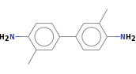 - [1,1'-Biphenyl]-4,4'-diamine, N,N,N',N'-tetramethyl- (C16H20N2)
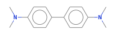 - N,N'-Diacetyl benzidine (C16H16N2O2)
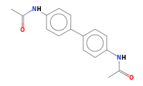 - [1,1'-Biphenyl]-4,4'-diamine, 2,2',3,3',5,5',6,6'-octafluoro- (C12H4F8N2)
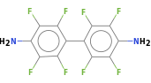 - [1,1'-Biphenyl]-4,4'-diamine, N,N'-diphenyl- (C24H20N2)
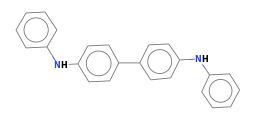 - Benzidine, dihydrochloride (C12H14Cl2N2)
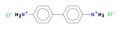 - Benzidine, dihydrochloride (C12H14Cl2N2)
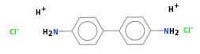 - Benzidine dihydrochloride (C12H14Cl2N2)
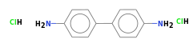 - Benzidine, 3,3'-dimethoxy- (C14H16N2O2)
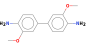 - Benzidine sulfate (C12H16N2O8S2)
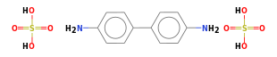